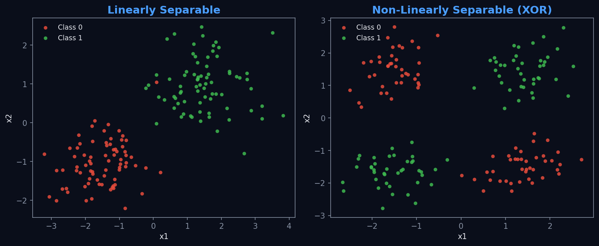

<!-- .slide: id="title" class="section-divider" data-state="is-section-divider" --> # LLMs 0 to 100 Module 2: Perceptrons and Optimization Neurons to Networks --- <!-- .slide: id="review-1" --> ## Review: Module 1 <div class="slide-columns" style="grid-template-columns: repeat(2, 1fr); gap: 30px;"> <div> **Shannon Entropy** Information is measurable. The entropy of a source measures the average surprise per symbol: $$H(X) = -\sum_{i} p(x_i) \log_2 p(x_i)$$ A good model assigns high probability to likely events — low surprise, few bits. </div> <div> **N-gram Models** Predict the next symbol from the previous $n - 1$ symbols: $$P(w_k \mid w_{k-n+1} \ldots w_{k-1})$$ Higher order = more context = better predictions, but the number of possible contexts explodes exponentially. </div> </div> --- <!-- .slide: id="review-2" --> ## Review: Cross-Entropy as a Loss In Module 1, cross-entropy measured how well an n-gram model predicted text: $$H(p, q) = -\sum_{x} p(x) \log q(x)$$ The same formula is now a **training objective**: we adjust the model to make this number as small as possible. Smaller cross-entropy means predictions closer to the truth. <div class="note"> **Key idea:** Module 1 used cross-entropy to *score* a model. Module 2 uses it to *train* one. </div> --- <div class="figure-card">  <div class="figure-info"> ## Frank Rosenblatt <!-- .element: class="fragment fade-in" --> <div class="fragment fade-in"> ### Built the First Learning Machine - Psychologist at Cornell, not a mathematician - Built the Mark I Perceptron (1958) — a physical machine with photocells and motor-driven weight updates - The first machine that could learn to classify patterns from data - Proved the perceptron convergence theorem: if data is linearly separable, training converges in finite steps - **His equation is our starting point today** </div> </div> </div> --- <!-- .slide: id="divider-neuron" class="section-divider" data-state="is-section-divider" --> # The Neuron Model Weighted sums, activations, and the simplest learning machine --- <!-- .slide: id="biological-analogy" --> ## A Loose Biological Analogy <div class="slide-columns" style="grid-template-columns: repeat(2, 1fr); gap: 30px; align-items: center;"> <div> <div style="text-align: center;"> <p class="text-lg" style="color: var(--primary-color); font-weight: 600; margin-bottom: 6px;">Biological Neuron</p> <svg viewBox="0 0 300 200" width="100%" style="max-height:240px;"> <g stroke="#4a9eff" stroke-width="2.5" fill="none" stroke-linecap="round"> <path d="M16,40 C52,56 70,82 96,96"/> <path d="M10,100 C48,100 66,102 94,104"/> <path d="M16,162 C52,148 70,124 96,112"/> <path d="M40,24 C64,52 80,74 100,92"/> <path d="M40,178 C64,150 80,130 100,116"/> </g> <ellipse cx="122" cy="104" rx="34" ry="30" fill="#0d1225" stroke="#4a9eff" stroke-width="2.5"/> <circle cx="122" cy="104" r="9" fill="#4a9eff"/> <line x1="156" y1="104" x2="246" y2="104" stroke="#f5a623" stroke-width="4" stroke-linecap="round"/> <g stroke="#f5a623" stroke-width="2.5" fill="none" stroke-linecap="round"> <path d="M246,104 L272,86"/> <path d="M246,104 L278,104"/> <path d="M246,104 L272,122"/> </g> <text x="20" y="196" fill="#8892a4" font-size="13">Dendrites</text> <text x="100" y="156" fill="#8892a4" font-size="13" text-anchor="middle">Cell body</text> <text x="240" y="150" fill="#8892a4" font-size="13" text-anchor="middle">Axon</text> </svg> <p class="text-lg" style="color: var(--muted-color); margin-top: 4px;">Dendrites in, cell body integrates, axon fires</p> </div> </div> <div> <div style="text-align: center;"> <p class="text-lg" style="color: var(--primary-color); font-weight: 600; margin-bottom: 6px;">Artificial Neuron</p> <svg viewBox="0 0 340 200" width="100%" style="max-height:240px;"> <defs> <marker id="bioarrow" markerWidth="8" markerHeight="8" refX="5" refY="3" orient="auto"> <path d="M0,0 L6,3 L0,6 Z" fill="#8892a4"/> </marker> </defs> <circle cx="38" cy="56" r="20" fill="#0d1225" stroke="#4a9eff" stroke-width="2.5"/> <text x="38" y="61" fill="#e8eaf0" font-size="15" text-anchor="middle">x₁</text> <circle cx="38" cy="148" r="20" fill="#0d1225" stroke="#4a9eff" stroke-width="2.5"/> <text x="38" y="153" fill="#e8eaf0" font-size="15" text-anchor="middle">x₂</text> <line x1="58" y1="56" x2="142" y2="96" stroke="#8892a4" stroke-width="2" marker-end="url(#bioarrow)"/> <line x1="58" y1="148" x2="142" y2="118" stroke="#8892a4" stroke-width="2" marker-end="url(#bioarrow)"/> <text x="90" y="66" fill="#f5a623" font-size="14" text-anchor="middle">w₁</text> <text x="90" y="146" fill="#f5a623" font-size="14" text-anchor="middle">w₂</text> <circle cx="170" cy="107" r="28" fill="#0d1225" stroke="#4a9eff" stroke-width="2.5"/> <text x="170" y="114" fill="#e8eaf0" font-size="20" text-anchor="middle">Σ</text> <text x="170" y="166" fill="#8892a4" font-size="13" text-anchor="middle">+ bias b</text> <line x1="198" y1="107" x2="230" y2="107" stroke="#8892a4" stroke-width="2" marker-end="url(#bioarrow)"/> <rect x="232" y="82" width="54" height="50" rx="6" fill="#0d1225" stroke="#3fb950" stroke-width="2.5"/> <text x="259" y="114" fill="#e8eaf0" font-size="20" text-anchor="middle">σ</text> <line x1="286" y1="107" x2="318" y2="107" stroke="#8892a4" stroke-width="2" marker-end="url(#bioarrow)"/> <text x="330" y="112" fill="#e8eaf0" font-size="15" text-anchor="middle">y</text> </svg> <p class="text-lg" style="color: var(--muted-color); margin-top: 4px;">Inputs × weights, sum + bias, activation out</p> </div> </div> </div> <div class="note"> The analogy aids intuition but breaks down fast: real neurons use spike timing, dendritic computation, and many neurotransmitters — none captured here. </div> --- <!-- .slide: id="perceptron-equation" --> ## The Perceptron A single neuron computes: $$y = \sigma(\mathbf{w} \cdot \mathbf{x} + b)$$ <div class="slide-columns" style="grid-template-columns: repeat(3, 1fr); gap: 20px;"> <div> **$\mathbf{w} \cdot \mathbf{x}$** Dot product of inputs and weights — how much each input matters </div> <div> **$+ \; b$** Bias term — shifts the decision boundary </div> <div> **$\sigma(\cdot)$** Activation function — introduces nonlinearity </div> </div> This is a **linear function** followed by a **nonlinearity**. That pattern is the fundamental building block of every neural network. --- <!-- .slide: id="activation-functions" --> ## Activation Functions <div class="slide-columns" style="grid-template-columns: repeat(4, 1fr); gap: 18px;"> <div> <div style="text-align:center;"> <p class="text-lg" style="color: var(--secondary-color); font-weight:600; margin:0;">Step</p> <p style="color: var(--muted-color); margin:2px 0;">$\sigma(z)=\mathbb{1}[z \geq 0]$</p> <svg viewBox="0 0 240 150" width="100%" style="max-height:150px;"> <line x1="120" y1="14" x2="120" y2="136" stroke="#2a3450" stroke-width="1.5"/> <line x1="18" y1="125" x2="222" y2="125" stroke="#2a3450" stroke-width="1.5"/> <polyline points="20,125 120,125" fill="none" stroke="#f5a623" stroke-width="3"/> <polyline points="120,25 220,25" fill="none" stroke="#f5a623" stroke-width="3"/> <line x1="120" y1="125" x2="120" y2="25" stroke="#f5a623" stroke-width="1.5" stroke-dasharray="4 4"/> </svg> <p style="color: var(--muted-color); font-size:13pt;">Binary; not differentiable at 0</p> </div> </div> <div> <div style="text-align:center;"> <p class="text-lg" style="color: var(--secondary-color); font-weight:600; margin:0;">Sigmoid</p> <p style="color: var(--muted-color); margin:2px 0;">$\dfrac{1}{1 + e^{-z}}$</p> <svg viewBox="0 0 240 150" width="100%" style="max-height:150px;"> <line x1="120" y1="14" x2="120" y2="136" stroke="#2a3450" stroke-width="1.5"/> <line x1="18" y1="125" x2="222" y2="125" stroke="#2a3450" stroke-width="1.5"/> <polyline points="20,124.8 30,124.6 40,124.2 50,123.5 60,122.3 70,120.3 80,116.7 90,110.8 100,101.9 110,89.6 120,75.0 130,60.4 140,48.1 150,39.2 160,33.3 170,29.7 180,27.7 190,26.5 200,25.8 210,25.4 220,25.2" fill="none" stroke="#f5a623" stroke-width="3"/> </svg> <p style="color: var(--muted-color); font-size:13pt;">(0,1); vanishing gradients</p> </div> </div> <div> <div style="text-align:center;"> <p class="text-lg" style="color: var(--secondary-color); font-weight:600; margin:0;">Tanh</p> <p style="color: var(--muted-color); margin:2px 0;">$\dfrac{e^z - e^{-z}}{e^z + e^{-z}}$</p> <svg viewBox="0 0 240 150" width="100%" style="max-height:150px;"> <line x1="120" y1="14" x2="120" y2="136" stroke="#2a3450" stroke-width="1.5"/> <line x1="18" y1="75" x2="222" y2="75" stroke="#2a3450" stroke-width="1.5"/> <polyline points="20,125.0 40,125.0 60,124.9 70,124.8 80,124.2 90,122.3 100,116.7 110,101.9 120,75.0 130,48.1 140,33.3 150,27.7 160,25.8 170,25.2 180,25.1 200,25.0 220,25.0" fill="none" stroke="#f5a623" stroke-width="3"/> </svg> <p style="color: var(--muted-color); font-size:13pt;">Zero-centered (-1,1)</p> </div> </div> <div> <div style="text-align:center;"> <p class="text-lg" style="color: var(--secondary-color); font-weight:600; margin:0;">ReLU</p> <p style="color: var(--muted-color); margin:2px 0;">$\max(0, z)$</p> <svg viewBox="0 0 240 150" width="100%" style="max-height:150px;"> <line x1="120" y1="14" x2="120" y2="136" stroke="#2a3450" stroke-width="1.5"/> <line x1="18" y1="125" x2="222" y2="125" stroke="#2a3450" stroke-width="1.5"/> <polyline points="20,125 120,125 210,35" fill="none" stroke="#f5a623" stroke-width="3"/> </svg> <p style="color: var(--muted-color); font-size:13pt;">Cheap; the modern default</p> </div> </div> </div> The course MLP uses **ReLU** in its hidden layer and **sigmoid** on the output (for a probability). <!-- .element: class="text-lg" style="text-align:center; color: var(--muted-color); margin-top: 14px;" --> --- <!-- .slide: id="why-nonlinearity" --> ## Why Nonlinearity Matters Stack two linear layers with no activation between them: $$f(\mathbf{x}) = W_2\,(W_1 \mathbf{x} + \mathbf{b}_1) + \mathbf{b}_2$$ Multiply it out and it is still just one linear layer: $$f(\mathbf{x}) = (W_2 W_1)\,\mathbf{x} + (W_2 \mathbf{b}_1 + \mathbf{b}_2) = W'\mathbf{x} + \mathbf{b}'$$ Any number of linear layers collapses to a single linear function, so depth alone gains **nothing**. The nonlinear activation between layers is what lets a network represent complex relationships. --- <!-- .slide: id="divider-matrix-graph" class="section-divider" data-state="is-section-divider" --> # Networks as Matrices Why GPUs matter --- <!-- .slide: id="matrix-natural-graph" --> ## Natural Graphs Become Sparse Matrices Every graph is a matrix: entry $(i,j)$ is the weight of the edge from node $j$ to node $i$; zero means no edge. <div class="slide-columns" style="grid-template-columns: 1.05fr 0.95fr; gap: 28px; align-items: center;"> <div> <svg viewBox="0 0 520 270" width="100%" style="max-height:310px;"> <defs> <marker id="sgar" markerWidth="7" markerHeight="7" refX="5" refY="3" orient="auto"> <path d="M0,0 L6,3 L0,6 Z" fill="#8892a4"/> </marker> </defs> <g stroke="#8892a4" stroke-width="2.2" fill="none" marker-end="url(#sgar)"> <path d="M90,64 C145,34 185,42 230,74"/> <path d="M90,64 C126,120 126,166 90,216"/> <path d="M230,74 C302,70 336,104 376,142"/> <path d="M90,216 C150,226 204,206 256,170"/> <path d="M256,170 C306,186 338,174 376,142"/> <path d="M376,142 C420,112 442,84 464,48"/> </g> <g fill="#0d1225" stroke="#4a9eff" stroke-width="2.5"> <circle cx="90" cy="64" r="22"/><circle cx="230" cy="74" r="22"/> <circle cx="376" cy="142" r="22"/><circle cx="90" cy="216" r="22"/> <circle cx="256" cy="170" r="22"/><circle cx="464" cy="48" r="22"/> </g> <g fill="#e8eaf0" font-size="16" text-anchor="middle"> <text x="90" y="70">A</text><text x="230" y="80">B</text><text x="376" y="148">C</text> <text x="90" y="222">D</text><text x="256" y="176">E</text><text x="464" y="54">F</text> </g> <g fill="#f5a623" font-size="13" text-anchor="middle"> <text x="158" y="48">0.7</text><text x="116" y="142">1.2</text><text x="307" y="84">0.5</text> <text x="170" y="223">0.9</text><text x="318" y="184">0.4</text><text x="430" y="88">1.1</text> </g> </svg> </div> <div> <div style="text-align:center;"> <p class="text-lg" style="color: var(--primary-color); font-weight:600; margin: 0 0 8px 0;">Adjacency / weight matrix</p> <table style="margin: 0 auto; border-collapse: collapse; color: var(--text-color); font-size: 15pt;"> <tr><td></td><td>A</td><td>B</td><td>C</td><td>D</td><td>E</td><td>F</td></tr> <tr><td>A</td><td>0</td><td style="color:#f5a623;">0.7</td><td>0</td><td style="color:#f5a623;">1.2</td><td>0</td><td>0</td></tr> <tr><td>B</td><td>0</td><td>0</td><td style="color:#f5a623;">0.5</td><td>0</td><td>0</td><td>0</td></tr> <tr><td>C</td><td>0</td><td>0</td><td>0</td><td>0</td><td>0</td><td style="color:#f5a623;">1.1</td></tr> <tr><td>D</td><td>0</td><td>0</td><td>0</td><td>0</td><td style="color:#f5a623;">0.9</td><td>0</td></tr> <tr><td>E</td><td>0</td><td>0</td><td style="color:#f5a623;">0.4</td><td>0</td><td>0</td><td>0</td></tr> <tr><td>F</td><td>0</td><td>0</td><td>0</td><td>0</td><td>0</td><td>0</td></tr> </table> <p style="color: var(--muted-color); font-size: 14pt; margin-top: 10px;">Zeros mean "no edge"; nonzeros carry edge weights.</p> </div> </div> </div> The dense layer case is the same idea with every possible edge present. Sparse graphs just keep the entries that matter. --- <!-- .slide: id="matrix-graph" --> ## Matrix-Graph Equivalence A layer's connections **are** a weight matrix: edge weight from input $j$ to neuron $i$ is entry $W_{ij}$. <div style="text-align:center; margin-top:6px;"> <svg viewBox="0 0 620 220" width="92%" style="max-height:300px;"> <defs> <marker id="mgar" markerWidth="7" markerHeight="7" refX="5" refY="3" orient="auto"> <path d="M0,0 L6,3 L0,6 Z" fill="#8892a4"/> </marker> </defs> <g stroke="#2a3450" stroke-width="1.8"> <line x1="72" y1="50" x2="190" y2="85" marker-end="url(#mgar)"/> <line x1="72" y1="110" x2="190" y2="88" marker-end="url(#mgar)"/> <line x1="72" y1="170" x2="190" y2="92" marker-end="url(#mgar)"/> <line x1="72" y1="50" x2="190" y2="148" marker-end="url(#mgar)"/> <line x1="72" y1="110" x2="190" y2="151" marker-end="url(#mgar)"/> <line x1="72" y1="170" x2="190" y2="154" marker-end="url(#mgar)"/> </g> <line x1="72" y1="50" x2="190" y2="85" stroke="#f5a623" stroke-width="2.6" marker-end="url(#mgar)"/> <g fill="#0d1225" stroke="#4a9eff" stroke-width="2.5"> <circle cx="55" cy="50" r="17"/><circle cx="55" cy="110" r="17"/><circle cx="55" cy="170" r="17"/> <circle cx="208" cy="90" r="17"/><circle cx="208" cy="152" r="17"/> </g> <g fill="#e8eaf0" font-size="13" text-anchor="middle"> <text x="55" y="55">x₁</text><text x="55" y="115">x₂</text><text x="55" y="175">x₃</text> <text x="208" y="95">h₁</text><text x="208" y="157">h₂</text> </g> <text x="312" y="124" fill="#8892a4" font-size="30" text-anchor="middle">≡</text> <path d="M412,66 L400,66 L400,176 L412,176" fill="none" stroke="#e8eaf0" stroke-width="2"/> <path d="M576,66 L588,66 L588,176 L576,176" fill="none" stroke="#e8eaf0" stroke-width="2"/> <g font-size="15" text-anchor="middle" fill="#e8eaf0"> <text x="446" y="108" fill="#f5a623">W₁₁</text><text x="496" y="108">W₁₂</text><text x="546" y="108">W₁₃</text> <text x="446" y="156">W₂₁</text><text x="496" y="156">W₂₂</text><text x="546" y="156">W₂₃</text> </g> <text x="494" y="205" fill="#8892a4" font-size="13" text-anchor="middle">rows = neurons, columns = inputs</text> </svg> </div> <div class="slide-columns" style="grid-template-columns: repeat(2, 1fr); gap: 36px;"> <div> **Forward pass:** $\mathbf{h} = \sigma(W\mathbf{x} + \mathbf{b})$ <!-- .element: class="text-lg" style="color: var(--secondary-color); margin:0;" --> One matrix multiply per layer. <!-- .element: class="text-lg" style="color: var(--muted-color); margin:4px 0 0 0;" --> </div> <div> **Why GPUs?** Each output is an independent dot product, so the work is massively parallel — exactly what a GPU's thousands of cores do best. <!-- .element: class="text-lg" style="margin:0;" --> </div> </div> --- <div class="slide-columns" style="grid-template-columns: 200px 1fr; gap: 30px; align-items: start;"> <div> <img src="images/minsky.jpg" alt="Marvin Minsky" style="border-radius: 8px; width: 100%; box-shadow: 0 4px 20px rgba(74, 158, 255, 0.15);"> <img src="images/papert.jpg" alt="Seymour Papert" style="border-radius: 8px; width: 100%; margin-top: 10px; box-shadow: 0 4px 20px rgba(74, 158, 255, 0.15);"> </div> <div> ## Minsky & Papert <!-- .element: class="fragment fade-in" style="border: none; margin: 0 0 10px 0;" --> <div class="fragment fade-in"> ### Killed Neural Networks for a Decade - Published *Perceptrons* (1969) — proved single-layer nets cannot compute XOR, parity, or connectedness - The result was widely interpreted as showing neural networks were fundamentally limited - Funding dried up for over a decade — the first AI winter for connectionism - Minsky was co-founder of MIT's AI Lab and a leading proponent of symbolic AI - **They knew multi-layer nets could solve these problems.** The critique was that no one knew how to *train* them. </div> </div> </div> --- <!-- .slide: id="divider-xor" class="section-divider" data-state="is-section-divider" --> # The XOR Problem The limitation that froze a field --- <!-- .slide: id="linear-separability" --> ## Linear Separability A single perceptron defines a **hyperplane** in the input space — a line in 2D, a plane in 3D. <div class="slide-columns" style="grid-template-columns: repeat(3, 1fr); gap: 25px;"> <div> <div style="text-align: center;"> <p class="text-xl" style="font-weight: 600; color: var(--primary-color);">AND</p> <table style="margin: 10px auto; font-size: 14pt; color: var(--text-color);"> <tr><td style="padding: 4px 12px;">0, 0</td><td style="padding: 4px 12px;">0</td></tr> <tr><td style="padding: 4px 12px;">0, 1</td><td style="padding: 4px 12px;">0</td></tr> <tr><td style="padding: 4px 12px;">1, 0</td><td style="padding: 4px 12px;">0</td></tr> <tr><td style="padding: 4px 12px;">1, 1</td><td style="padding: 4px 12px;">1</td></tr> </table> <p style="color: #3fb950;">One line separates them.</p> </div> </div> <div> <div style="text-align: center;"> <p class="text-xl" style="font-weight: 600; color: var(--primary-color);">OR</p> <table style="margin: 10px auto; font-size: 14pt; color: var(--text-color);"> <tr><td style="padding: 4px 12px;">0, 0</td><td style="padding: 4px 12px;">0</td></tr> <tr><td style="padding: 4px 12px;">0, 1</td><td style="padding: 4px 12px;">1</td></tr> <tr><td style="padding: 4px 12px;">1, 0</td><td style="padding: 4px 12px;">1</td></tr> <tr><td style="padding: 4px 12px;">1, 1</td><td style="padding: 4px 12px;">1</td></tr> </table> <p style="color: #3fb950;">One line separates them.</p> </div> </div> <div> <div style="text-align: center;"> <p class="text-xl" style="font-weight: 600; color: var(--primary-color);">XOR</p> <table style="margin: 10px auto; font-size: 14pt; color: var(--text-color);"> <tr><td style="padding: 4px 12px;">0, 0</td><td style="padding: 4px 12px;">0</td></tr> <tr><td style="padding: 4px 12px;">0, 1</td><td style="padding: 4px 12px;">1</td></tr> <tr><td style="padding: 4px 12px;">1, 0</td><td style="padding: 4px 12px;">1</td></tr> <tr><td style="padding: 4px 12px;">1, 1</td><td style="padding: 4px 12px;">0</td></tr> </table> <p style="color: #e74c3c;">No single line works.</p> </div> </div> </div> XOR is **not linearly separable** — you cannot draw one line to separate the classes. This is what Minsky and Papert proved formally in 1969. --- <section id="single-perceptron"> <h2>A Single Neuron Is One Line</h2> <div class="interactive-host" data-widget="singlePerceptron"></div> </section> --- <!-- .slide: id="xor-hidden-layer" --> ## Solving XOR with a Hidden Layer Two hidden neurons each learn one linear boundary; the output neuron combines them. <div class="slide-columns" style="grid-template-columns: 1.1fr 1fr; gap: 28px; align-items: center;"> <div> <div style="text-align:center;"> <svg viewBox="0 0 480 230" width="100%" style="max-height:250px;"> <defs> <marker id="xhar" markerWidth="7" markerHeight="7" refX="5" refY="3" orient="auto"> <path d="M0,0 L6,3 L0,6 Z" fill="#8892a4"/> </marker> </defs> <g stroke="#2a3450" stroke-width="1.8"> <line x1="74" y1="60" x2="206" y2="62" marker-end="url(#xhar)"/> <line x1="74" y1="60" x2="206" y2="168" marker-end="url(#xhar)"/> <line x1="74" y1="168" x2="206" y2="62" marker-end="url(#xhar)"/> <line x1="74" y1="168" x2="206" y2="168" marker-end="url(#xhar)"/> <line x1="240" y1="62" x2="372" y2="110" marker-end="url(#xhar)"/> <line x1="240" y1="168" x2="372" y2="118" marker-end="url(#xhar)"/> </g> <g fill="#0d1225" stroke="#4a9eff" stroke-width="2.5"> <circle cx="56" cy="60" r="18"/><circle cx="56" cy="168" r="18"/> <circle cx="224" cy="62" r="20"/><circle cx="224" cy="168" r="20"/> <circle cx="392" cy="114" r="20"/> </g> <g fill="#e8eaf0" font-size="14" text-anchor="middle"> <text x="56" y="65">x₁</text><text x="56" y="173">x₂</text> <text x="224" y="67">h₁</text><text x="224" y="173">h₂</text> <text x="392" y="119">o</text> </g> <g fill="#8892a4" font-size="12" text-anchor="middle"> <text x="224" y="34">boundary A</text> <text x="224" y="210">boundary B</text> <text x="392" y="158">AND-combine</text> </g> </svg> </div> </div> <div> <div> <p class="text-lg" style="color: var(--secondary-color); font-weight:600; margin:0;">Hidden neuron 1</p> <p class="text-lg" style="margin:2px 0 14px 0;">One line, e.g. $x_1 + x_2 > 0.5$</p> <p class="text-lg" style="color: var(--secondary-color); font-weight:600; margin:0;">Hidden neuron 2</p> <p class="text-lg" style="margin:2px 0 0 0;">Another line, e.g. $x_1 + x_2 < 1.5$</p> </div> </div> </div> <div class="note"> **Output neuron** — fires only when *both* hidden neurons agree (AND-like logic). That intersection of two half-planes is the XOR region. <!-- .element: class="text-lg" style="margin:0;" --> </div> The simplest proof that **depth matters**: one layer cannot do what two can. <!-- .element: class="text-lg" style="margin-top:16px;" --> --- <section id="boundary-explorer-depth"> <h2>Adding a Second Layer</h2> <div class="interactive-host" data-widget="boundaryExplorer" data-mode="depth"></div> </section> --- <!-- .slide: id="folding" --> ## Folding in High-Dimensional Space A single perceptron only cuts the space with one flat hyperplane. A hidden layer applies $\sigma(W\mathbf{x}+\mathbf{b})$, which **folds** the space itself. <div class="note"> **Intuition:** picture a sheet of paper with two colors of dots mixed together. One fold (one hidden layer) can stack same-colored dots so a single straight cut separates them. More folds handle more tangled arrangements. </div> The weight matrix $W$ **is** the fold: entangled points get pulled apart, distant points brought together. --- <section id="anim-folding"> <h2>Folding: One Neuron to Many</h2> <div class="interactive-host" data-widget="folding"></div> </section> --- <!-- .slide: id="mlp-boundary" --> ## Many Lines Make a Curve A ReLU network is still built from straight pieces. Each hidden neuron contributes **one** linear boundary; combining them carves the input space into regions. <div class="note"> The decision boundary *looks* curved, but up close it is **piecewise-linear** — many straight cuts from the hidden neurons. </div> More hidden neurons means more cuts, so the boundary can wrap tightly around any class. --- <section id="mlp-curve"> <h2>Many Lines Make a Curve</h2> <div class="interactive-host" data-widget="mlpBoundary"></div> </section> --- <div class="figure-card">  <div class="figure-info"> ## Geoffrey Hinton <!-- .element: class="fragment fade-in" --> <div class="fragment fade-in"> ### Revived Neural Networks with Backpropagation - With David Rumelhart and Ronald Williams, published "Learning Representations by Back-Propagating Errors" in *Nature* (1986) - Showed how to train multi-layer networks — the missing piece that Minsky and Papert identified - The chain rule was discovered independently multiple times (Werbos, 1974), but this paper popularized it - Received the 2024 Nobel Prize in Physics for foundational work enabling machine learning with artificial neural networks </div> </div> </div> --- <!-- .slide: id="divider-backprop" class="section-divider" data-state="is-section-divider" --> # Backpropagation The chain rule, applied systematically --- <!-- .slide: id="loss-functions" --> ## Loss Functions A **loss function** measures how wrong a prediction is. Training minimizes it. <!-- .element: class="text-lg" --> <div class="slide-columns" style="grid-template-columns: repeat(2, 1fr); gap: 40px;"> <div> **Mean Squared Error (Regression)** <!-- .element: class="text-lg" style="color: var(--secondary-color); font-weight: 600; margin-bottom: 10px;" --> $$L = \frac{1}{N}\sum_{i=1}^{N}(y_i - \hat{y}_i)^2$$ Penalizes large errors quadratically. Standard for predicting continuous values. </div> <div> **Binary Cross-Entropy (Classification)** <!-- .element: class="text-lg" style="color: var(--secondary-color); font-weight: 600; margin-bottom: 10px;" --> $$L = -\frac{1}{N}\sum_{i=1}^{N}\left[y_i \log(\hat{y}_i) + (1 - y_i)\log(1 - \hat{y}_i)\right]$$ Measures surprise under the model's predictions. High loss when confident and wrong. </div> </div> <div class="note"> **Module 1 connection:** binary cross-entropy is Shannon's entropy used as a training objective — the same formula that scored n-gram models now drives learning. <!-- .element: class="text-lg" style="margin: 0;" --> </div> --- <!-- .slide: id="backprop-without" --> ## Why We Need Backprop The naive way to get a gradient: nudge one weight by a tiny $\epsilon$, recompute the loss, and measure the change. <!-- .element: class="text-lg" --> $$\frac{\partial L}{\partial w} \approx \frac{L(w + \epsilon) - L(w)}{\epsilon}$$ That is **one forward pass per weight**. Modern networks have **billions** of weights, so this is hopeless. <!-- .element: class="text-lg" --> Backpropagation gets *every* gradient in a **single backward pass**, about the cost of one forward pass. That is why training large networks is possible at all. <!-- .element: class="text-lg" style="margin-top: 15px;" --> --- <!-- .slide: id="backprop-overview" --> ## The Backpropagation Algorithm Run the network forward, then walk **backward** applying the **chain rule** to turn the loss into a weight update. <div style="text-align:center; margin-top:6px;"> <svg viewBox="0 0 760 230" width="96%" style="max-height:300px;"> <defs> <marker id="bpf" markerWidth="8" markerHeight="8" refX="6" refY="3" orient="auto"><path d="M0,0 L7,3 L0,6 Z" fill="#4a9eff"/></marker> <marker id="bpb" markerWidth="8" markerHeight="8" refX="6" refY="3" orient="auto"><path d="M0,0 L7,3 L0,6 Z" fill="#f5a623"/></marker> </defs> <g font-size="16" text-anchor="middle"> <rect x="22" y="86" width="92" height="52" rx="8" fill="#0d1225" stroke="#4a9eff" stroke-width="2.2"/><text x="68" y="118" fill="#e8eaf0">input x</text> <rect x="186" y="86" width="110" height="52" rx="8" fill="#0d1225" stroke="#4a9eff" stroke-width="2.2"/><text x="241" y="112" fill="#e8eaf0">weight W</text><text x="241" y="130" fill="#8892a4" font-size="13">z = Wx + b</text> <rect x="368" y="86" width="100" height="52" rx="8" fill="#0d1225" stroke="#4a9eff" stroke-width="2.2"/><text x="418" y="112" fill="#e8eaf0">output ŷ</text><text x="418" y="130" fill="#8892a4" font-size="13">ŷ = σ(z)</text> <rect x="540" y="86" width="92" height="52" rx="8" fill="#0d1225" stroke="#e74c3c" stroke-width="2.2"/><text x="586" y="118" fill="#e8eaf0">loss L</text> <rect x="664" y="86" width="84" height="52" rx="8" fill="#0d1225" stroke="#3fb950" stroke-width="2.2"/><text x="706" y="112" fill="#e8eaf0">update</text><text x="706" y="130" fill="#8892a4" font-size="12">new W</text> </g> <g stroke="#4a9eff" stroke-width="2.4" fill="none"> <line x1="116" y1="100" x2="184" y2="100" marker-end="url(#bpf)"/> <line x1="298" y1="100" x2="366" y2="100" marker-end="url(#bpf)"/> <line x1="470" y1="100" x2="538" y2="100" marker-end="url(#bpf)"/> </g> <text x="385" y="64" fill="#4a9eff" font-size="14" text-anchor="middle">forward pass</text> <g stroke="#f5a623" stroke-width="2.4" fill="none"> <line x1="540" y1="158" x2="470" y2="158" marker-end="url(#bpb)"/> <line x1="368" y1="158" x2="298" y2="158" marker-end="url(#bpb)"/> <path d="M586,140 C594,190 696,190 706,140" marker-end="url(#bpb)"/> </g> <text x="385" y="208" fill="#f5a623" font-size="14" text-anchor="middle">backward pass</text> </svg> </div> The chain rule multiplies one local derivative per stage along the path **loss → output → weight**, giving $\partial L/\partial w$. The update rule then adds the negative-gradient step. <!-- .element: class="text-lg" style="text-align:center; color: var(--muted-color); margin-top:10px;" --> --- <!-- .slide: id="chain-rule" --> ## The Chain Rule in the Backward Pass To find how a weight deep in the network affects the loss, the chain rule multiplies local derivatives along the path from output back to that weight. <div style="text-align:center; margin-top:6px;"> <svg viewBox="0 0 700 240" width="94%" style="max-height:300px;"> <defs> <marker id="crf" markerWidth="7" markerHeight="7" refX="5" refY="3" orient="auto"><path d="M0,0 L6,3 L0,6 Z" fill="#4a9eff"/></marker> <marker id="crb" markerWidth="7" markerHeight="7" refX="5" refY="3" orient="auto"><path d="M0,0 L6,3 L0,6 Z" fill="#f5a623"/></marker> </defs> <g font-size="15" text-anchor="middle"> <rect x="16" y="90" width="88" height="48" rx="7" fill="#0d1225" stroke="#4a9eff" stroke-width="2"/><text x="60" y="119" fill="#e8eaf0">w</text> <rect x="160" y="90" width="88" height="48" rx="7" fill="#0d1225" stroke="#4a9eff" stroke-width="2"/><text x="204" y="119" fill="#e8eaf0">z</text> <rect x="310" y="90" width="88" height="48" rx="7" fill="#0d1225" stroke="#4a9eff" stroke-width="2"/><text x="354" y="119" fill="#e8eaf0">ŷ</text> <rect x="460" y="90" width="88" height="48" rx="7" fill="#0d1225" stroke="#e74c3c" stroke-width="2"/><text x="504" y="119" fill="#e8eaf0">L</text> <rect x="590" y="90" width="88" height="48" rx="7" fill="#0d1225" stroke="#3fb950" stroke-width="2"/><text x="634" y="112" fill="#e8eaf0">update</text><text x="634" y="130" fill="#8892a4" font-size="12">w new</text> </g> <g stroke="#4a9eff" stroke-width="2" fill="none"> <line x1="106" y1="100" x2="158" y2="100" marker-end="url(#crf)"/> <line x1="250" y1="100" x2="308" y2="100" marker-end="url(#crf)"/> <line x1="400" y1="100" x2="458" y2="100" marker-end="url(#crf)"/> </g> <g stroke="#f5a623" stroke-width="2.4" fill="none"> <line x1="460" y1="152" x2="400" y2="152" marker-end="url(#crb)"/> <line x1="310" y1="152" x2="250" y2="152" marker-end="url(#crb)"/> <line x1="160" y1="152" x2="106" y2="152" marker-end="url(#crb)"/> <path d="M504,140 C512,192 626,192 634,140" marker-end="url(#crb)"/> </g> <text x="135" y="184" fill="#f5a623" font-size="14" text-anchor="middle">∂z/∂w</text> <text x="285" y="184" fill="#f5a623" font-size="14" text-anchor="middle">∂ŷ/∂z</text> <text x="435" y="184" fill="#f5a623" font-size="14" text-anchor="middle">∂L/∂ŷ</text> <text x="350" y="215" fill="#e8eaf0" font-size="15" text-anchor="middle" font-weight="600"> ∂L/∂w = (∂L/∂ŷ) × (∂ŷ/∂z) × (∂z/∂w) </text> </svg> </div> Each layer only needs its own **local** derivative; the chain rule stitches them together. This is why autograd works: no matter how deep the network, each node just multiplies its gradient by the derivative of the operation it performed. --- <!-- .slide: id="gradient-step-calculation" --> ## Gradient Descent as a Calculation At a point on the loss surface, the gradient points uphill. The update adds a step in the opposite direction. <div class="slide-columns" style="grid-template-columns: repeat(2, 1fr); gap: 36px;"> <div> **Current point** $$ \mathbf w_{\text{old}} = \begin{bmatrix} w_1 \\ w_2 \end{bmatrix} $$ $$ \nabla L(\mathbf w_{\text{old}}) = \begin{bmatrix} \frac{\partial L}{\partial w_1} \\ \frac{\partial L}{\partial w_2} \end{bmatrix} $$ </div> <div> **Update** $$ \mathbf w_{\text{new}} = \mathbf w_{\text{old}} + \left(-\eta \nabla L(\mathbf w_{\text{old}})\right) $$ The coordinates change because the weights change; the height changes because the loss at the new coordinates is different. </div> </div> --- <!-- .slide: id="divider-gradient-descent" class="section-divider" data-state="is-section-divider" --> # Gradient Descent Walking downhill on the loss surface --- <!-- .slide: id="gradient-descent-rule" --> ## The Update Rule Compute the gradient of the loss with respect to all weights, then take a step in the negative gradient direction: $$ w_{\text{new}} = w_{\text{old}} + \left(-\eta \frac{\partial L}{\partial w}\right) $$ <div class="slide-columns" style="grid-template-columns: repeat(3, 1fr); gap: 25px;"> <div> <div style="text-align: center;"> **$\eta$ too large** Overshoots the minimum and may diverge entirely </div> </div> <div> <div style="text-align: center;"> **$\eta$ too small** Converges very slowly, may get stuck in local minima </div> </div> <div> <div style="text-align: center;"> **$\eta$ just right** Steady convergence toward a good minimum </div> </div> </div> --- <!-- .slide: id="sgd" --> ## Stochastic Gradient Descent Instead of computing the gradient over the entire dataset (batch gradient descent), **SGD** computes it over a random subset (mini-batch). <div class="slide-columns" style="grid-template-columns: repeat(2, 1fr); gap: 30px;"> <div> **Small batch (e.g., 32)** - Noisier gradient estimates - Faster per step - Noise helps escape local minima </div> <div> **Large batch (e.g., 256)** - Smoother gradient estimates - More memory required - May converge to sharper minima </div> </div> **Typical batch sizes:** 32, 64, 128, 256. The trade-off between noise and stability is a practical tuning decision. --- <!-- .slide: id="loss-landscape" --> ## Loss Landscape The loss function defines a surface in weight space. For a network with $n$ weights, this is a surface in $(n + 1)$-dimensional space. <div class="slide-columns" style="grid-template-columns: repeat(3, 1fr); gap: 25px;"> <div> **Sharp Minima** Small weight perturbations cause large loss changes. Tend to **generalize poorly**. </div> <div> **Flat Minima** Robust to small perturbations. Tend to **generalize better** to new data. </div> <div> **Saddle Points** Gradient is zero but not a minimum. In high dimensions, **far more common** than local minima. </div> </div> The learning rate affects which kind of minimum the optimizer finds. SGD noise helps escape sharp minima and saddle points. <p class="footnote">Li et al. 2018, "Visualizing the Loss Landscape of Neural Nets"</p> --- <section id="anim-optimizer"> <h2>Loss Landscape: Two Weights</h2> <div class="interactive-host" data-widget="lossLandscape"></div> </section> --- <!-- .slide: id="overfitting" --> ## Overfitting and Generalization A network with enough parameters can **memorize** any training set — achieving zero training loss but failing on new data. <div class="slide-columns" style="grid-template-columns: repeat(2, 1fr); gap: 40px;"> <div> **Overfitting** - Training loss goes to zero - Test loss stays high or increases - The model has memorized the training data, not learned the pattern </div> <div> **Generalization** - Low loss on both training and test data - The model has learned the underlying structure - Performs well on data it has never seen </div> </div> **Regularization techniques** (named here, covered in later modules): **dropout** (randomly zero out neurons during training) and **weight decay** (penalize large weights with $\lambda \|\mathbf{w}\|^2$). --- <section id="anim-overfitting"> <div class="video-container"> <video class="manim-stepper" data-manim-scene="overfit-viz" preload="auto"></video> </div> </section> --- <!-- .slide: id="adam" --> ## Adam Optimizer **Adam** (Adaptive Moment Estimation) maintains per-parameter learning rates based on the history of gradients. - Tracks the first moment (mean) and second moment (variance) of each parameter's gradient - Parameters with consistently large gradients get smaller learning rates - Parameters with small or noisy gradients get larger learning rates Adam is the **default optimizer** in practice for most deep learning tasks. When in doubt, start with Adam. --- <section id="adam-landscape"> <h2>Adam on the Loss Landscape</h2> <div class="interactive-host" data-widget="adamLandscape"></div> </section> --- <!-- .slide: id="computation-graphs" --> ## Computation Graphs Frameworks like PyTorch build a **dynamic computation graph** as the forward pass runs. <!-- .element: class="text-lg" --> - Each operation records its inputs and which function produced the output - The backward pass walks the graph in reverse, applying the chain rule at every node - You write only the forward pass; the gradients come for free <!-- .element: class="text-lg" style="margin-top: 15px;" --> <div class="note"> This is **automatic differentiation** (autograd) — why you can prototype a new architecture in a few lines without deriving a single gradient by hand. <!-- .element: class="text-lg" style="margin: 0;" --> </div> --- <!-- .slide: id="divider-exercise" class="section-divider" data-state="is-section-divider" --> # Exercise Text Classifier with Decision Boundary Visualization --- <!-- .slide: id="exercise-run" --> ## Running the Exercise Open `module_02_perceptrons/exercise.py` and fill in the `NotImplementedError` lines. Run after each step — unfinished functions are skipped automatically. <!-- .element: class="text-lg" --> ```bash # Run the exercise (skips any not yet implemented) cd exercises uv run python module_02_perceptrons/src/main.py ``` The exercise trains a single-neuron classifier and an MLP on 2D data, visualizing how they learn to separate classes. Check the `output/` directory for plots after each run. <!-- .element: class="text-lg" style="margin-top: 15px;" --> --- <!-- .slide: id="exercise-overview" --> ## Exercise: Perceptrons and Neural Networks Build it with PyTorch tensors: train a single neuron on linearly separable data, watch it fail on XOR-like data, then fix it with a ReLU hidden layer. <!-- .element: class="text-lg" --> Each function is mostly written for you — you fill in **one key line**. <!-- .element: class="text-lg" style="margin-top: 10px;" --> --- <!-- .slide: id="exercise-data-viz" --> ## The Datasets <div style="display:flex; align-items:center; justify-content:center; flex:1;"> <p></p> </div> --- <!-- .slide: id="exercise-step1-code" --> ## Step 1: forward() ```python def forward(X: torch.Tensor, weights: torch.Tensor, bias: torch.Tensor) -> torch.Tensor: """Compute the output of a single neuron for a whole batch. Args: X: Input tensor, shape (n_samples, 2). weights: Weight vector, shape (2,). bias: Scalar bias tensor. Returns: A probability tensor of shape (n_samples,) with values in (0, 1). """ # TODO: Compute the neuron's output in one line raise NotImplementedError("TODO: implement the forward pass") ``` <div class="fragment hint-box"> **Hint:** Use the batch matrix-vector product `X @ weights`, add `bias`, then pass the result to `sigmoid()`. </div> <div class="fragment note"> **Answer:** ```python return sigmoid(X @ weights + bias) ``` </div> --- <!-- .slide: id="exercise-step2-code" --> ## Step 2: binary_cross_entropy() ```python def binary_cross_entropy(y_true: torch.Tensor, y_pred: torch.Tensor) -> torch.Tensor: """Compute the binary cross-entropy loss: -[y log(p) + (1 - y) log(1 - p)]. Args: y_true: True label(s), 0 or 1 (scalar or tensor). y_pred: Predicted probability/probabilities in (0, 1). Returns: The per-sample loss (same shape as the inputs); lower is better. """ # Clip predictions away from 0 and 1 to avoid log(0) = -infinity eps = 1e-7 y_pred = torch.clamp(y_pred, eps, 1 - eps) # TODO: Compute and return the BCE loss using the formula in the docstring raise NotImplementedError("TODO: implement binary cross-entropy") ``` <div class="fragment hint-box"> **Hint:** Use `torch.log(y_pred)` and `torch.log(1 - y_pred)`, matching the formula in the docstring. </div> <div class="fragment note"> **Answer:** ```python return -(y_true * torch.log(y_pred) + (1 - y_true) * torch.log(1 - y_pred)) ``` </div> --- <!-- .slide: id="exercise-step3-code" --> ## Step 3: compute_gradients() ```python def compute_gradients( X: torch.Tensor, y_true: torch.Tensor, y_pred: torch.Tensor ) -> tuple[torch.Tensor, torch.Tensor]: """For sigmoid + BCE the chain rule simplifies to: error = y_pred - y_true dw = X.T @ error / n db = error.mean() """ # TODO: Compute the averaged gradients using the formulas in the docstring raise NotImplementedError("TODO: implement gradient computation") ``` <div class="fragment hint-box"> **Hint:** The error is `y_pred - y_true`. The weight gradient is `X.T @ error` averaged over the batch; the bias gradient is the mean error. </div> <div class="fragment note"> **Answer:** ```python error = y_pred - y_true n = X.shape[0] dw = X.T @ error / n db = error.mean() return (dw, db) ``` </div> --- <!-- .slide: id="exercise-step4-code" --> ## Step 4: update_parameters() ```python def update_parameters( weights: torch.Tensor, bias: torch.Tensor, dw: torch.Tensor, db: torch.Tensor, learning_rate: float, ) -> tuple[torch.Tensor, torch.Tensor]: """Update the weights and bias with one gradient-descent step. Args: weights: Current weight vector, shape (2,). bias: Current bias (0-dim tensor). dw: Gradient w.r.t. weights, shape (2,). db: Gradient w.r.t. bias (0-dim tensor). learning_rate: Step size, e.g. 0.5. Returns: (new_weights, new_bias): the updated parameters. """ # TODO: Apply the gradient-descent update rule raise NotImplementedError("TODO: implement parameter update") ``` <div class="fragment hint-box"> **Hint:** Subtract `learning_rate * dw` from weights, `learning_rate * db` from bias. </div> <div class="fragment note"> **Answer:** ```python return (weights - learning_rate * dw, bias - learning_rate * db) ``` </div> --- <section id="exercise-step5-output"> <h2>Steps 1–4: Single Neuron Output</h2> <div class="content" style="justify-content: center;"> <div class="terminal-output"> <div class="terminal-bar"> <span class="terminal-dot red"></span> <span class="terminal-dot yellow"></span> <span class="terminal-dot green"></span> <span class="terminal-title">uv run python module_02_perceptrons/src/main.py</span> </div> <div class="terminal-body"> <pre class="terminal-pre"><span class="header">============================================================ PART 1: Single Neuron on Linearly Separable Data ============================================================</span> <span class="success">Loaded 150 samples from linear_separable.csv</span> Epoch 20/100 loss=0.0753 Epoch 40/100 loss=0.0536 Epoch 60/100 loss=0.0457 Epoch 80/100 loss=0.0416 Epoch 100/100 loss=0.0391 Final weights: [2.4276, 1.7352], bias: 0.1047 <span class="success">Accuracy: 149/150 (99.3%)</span> Saved plot to output/step5_linear_perceptron.png <span class="header">============================================================ PART 2: Single Neuron on Non-Linearly Separable Data (XOR) ============================================================</span> <span class="success">Loaded 160 samples from non_linear_separable.csv</span> Epoch 20/100 loss=0.6926 Epoch 40/100 loss=0.6926 Epoch 60/100 loss=0.6926 Epoch 80/100 loss=0.6926 Epoch 100/100 loss=0.6926 Final weights: [0.0070, -0.0399], bias: -0.0016 <span class="t-fail">Accuracy: 80/160 (50.0%)</span> (A single neuron cannot solve this non-linearly-separable problem.) Saved plot to output/step6_nonlinear_perceptron.png <span class="header">============================================================ PART 3: MLP on Non-Linearly Separable Data ============================================================</span> <span class="skipped"> [skipped: TODO: implement the MLP forward pass]</span></pre> </div> </div> <p class="text-lg terminal-caption">99.3% on linear data, but only 50% on XOR — a single neuron is a linear classifier.</p> </div> </section> --- <!-- .slide: id="exercise-step6-context" --> ## Step 5: Why the Single Neuron Fails PART 2 ran the **same** trained neuron on the XOR-like dataset. No new code — the runner does it automatically. <!-- .element: class="text-lg" --> <div class="note"> **50% accuracy is random guessing.** The loss flat-lines at **0.693**, which is exactly $\ln 2$ — the cross-entropy of a fair coin. <!-- .element: class="text-lg" style="margin:0;" --> </div> No straight line separates XOR, so the best a single linear neuron can do is shrug and predict 0.5 for everything. The fix is a **hidden layer with a nonlinearity**. <!-- .element: class="text-lg" style="margin-top: 18px;" --> --- <!-- .slide: id="exercise-step6-code" --> ## Step 6: relu() ```python def relu(z: torch.Tensor) -> torch.Tensor: """The ReLU activation: max(0, z). Args: z: A tensor of pre-activation values (any shape). Returns: A tensor the same shape as z, with negatives replaced by 0. """ # TODO: Return the elementwise max of 0 and z in one line raise NotImplementedError("TODO: implement the ReLU activation") ``` <div class="fragment hint-box"> **Hint:** `torch.clamp(z, min=0.0)` keeps positive entries and clamps negative entries to zero. </div> <div class="fragment note"> **Answer:** ```python return torch.clamp(z, min=0.0) ``` </div> --- <!-- .slide: id="exercise-step7-code" --> ## Step 7: MLP.forward() ```python def forward(self, x: torch.Tensor) -> torch.Tensor: """Run the forward pass through both layers. Args: x: Input batch, shape (n_samples, 2). Returns: Output probabilities, shape (n_samples, 1), each in (0, 1). """ # TODO: Compute the two-layer forward pass and return the output probabilities raise NotImplementedError("TODO: implement MLP forward pass") ``` <div class="fragment hint-box"> **Hint:** Apply `relu()` to `self.hidden(x)`, then feed that hidden representation into `self.output(...)`, then apply `sigmoid()`. </div> <div class="fragment note"> **Answer:** ```python h = relu(self.hidden(x)) return sigmoid(self.output(h)) ``` </div> --- <section id="exercise-step7-output"> <h2>Step 7: MLP Output</h2> <div class="content" style="justify-content: center;"> <div class="terminal-output"> <div class="terminal-bar"> <span class="terminal-dot red"></span> <span class="terminal-dot yellow"></span> <span class="terminal-dot green"></span> <span class="terminal-title">uv run python module_02_perceptrons/src/main.py</span> </div> <div class="terminal-body"> <pre class="terminal-pre"><span class="header">============================================================ PART 1: Single Neuron on Linearly Separable Data ============================================================</span> <span class="success">Accuracy: 149/150 (99.3%)</span> <span class="header">============================================================ PART 2: Single Neuron on Non-Linearly Separable Data (XOR) ============================================================</span> <span class="t-fail">Accuracy: 80/160 (50.0%)</span> <span class="header">============================================================ PART 3: MLP on Non-Linearly Separable Data ============================================================</span> Epoch 100/500 loss=0.0217 Epoch 200/500 loss=0.0107 Epoch 300/500 loss=0.0071 Epoch 400/500 loss=0.0053 Epoch 500/500 loss=0.0042 <span class="success">Accuracy: 160/160 (100.0%)</span> Saved comparison plot to output/step7_comparison.png Saved MLP loss plot to output/step7_mlp_loss.png <span class="header">============================================================ EXTRA CREDIT: MLP trained with your own SGD optimizer ============================================================</span> <span class="success">Accuracy: 160/160 (100.0%)</span> (Your optimizer matches torch.optim.SGD.) <span class="header">============================================================ Done! Check the output/ directory for plots. ============================================================</span></pre> </div> </div> <p class="text-lg terminal-caption">100% — the ReLU hidden layer lets the MLP learn a non-linear boundary the single neuron could not.</p> </div> </section> --- <!-- .slide: id="exercise-extra-credit" --> ## Extra Credit: Your Own Optimizer Implement `SGD.step()` — the optimizer step that applies gradients PyTorch already computed with autograd. <!-- .element: class="text-lg" --> ```python def step(self) -> None: """Apply one gradient-descent update to every parameter, in place. Args: None. Returns: None. Each parameter tensor is modified in place. """ # TODO: update each parameter in place using its gradient raise NotImplementedError("Extra credit: implement the optimizer step") ``` <div class="fragment hint-box"> **Hint:** Inside `with torch.no_grad():`, loop over `self.params` and update each one in place with `p -= self.lr * p.grad`. </div> The runner trains the same MLP once with `torch.optim.SGD` and once with this small optimizer class. Both use the same gradients; only the parameter update object changes. <!-- .element: class="text-lg" style="margin-top: 15px;" --> --- <!-- .slide: id="divider-quiz" class="section-divider" data-state="is-section-divider" --> # Quiz Test your understanding --- <!-- .slide: id="quiz-q1" --> ## Q1: Why Nonlinearity? <div class="quiz-prompt"> A student proposes building a "deep" network with 100 linear layers (no activation functions) to model a complex relationship. What will this network compute, and why is the student's approach fundamentally flawed? </div> <div class="fragment note quiz-answer"> **Answer:** The composition of any number of linear transformations is still a single linear transformation: $W_{100} \cdots W_2 W_1 \mathbf{x} = W' \mathbf{x}$. The 100-layer network has exactly the same representational power as a single layer. Without nonlinear activation functions between layers, depth adds nothing. </div> --- <!-- .slide: id="quiz-q2" --> ## Q2: The XOR Barrier <div class="quiz-prompt"> In the exercise, the single neuron achieved 50% accuracy on XOR-like data, with the loss stuck at 0.693. Why exactly 50%, and what is special about the number 0.693? </div> <div class="fragment note quiz-answer"> **Answer:** 50% is random chance for a binary classification problem — the neuron cannot do better than guessing. The loss 0.693 is $\ln(2) \approx 0.6931$, which is the cross-entropy of a fair coin (maximum uncertainty for two classes). The neuron converges to predicting ~0.5 for everything because no linear boundary can improve on random guessing for XOR-structured data. </div> --- <!-- .slide: id="quiz-q3" --> ## Q3: Gradient Descent Trade-offs <div class="quiz-prompt"> You are training a neural network and notice the loss is oscillating wildly instead of decreasing smoothly. Name two possible causes and what you would try for each. </div> <div class="fragment note quiz-answer"> **Answer:** (1) **Learning rate too high** — the optimizer overshoots the minimum on each step. Fix: reduce the learning rate. (2) **Batch size too small** — the gradient estimate is very noisy, causing erratic updates. Fix: increase the batch size for smoother gradients. A third possibility: the loss landscape itself is very rugged, in which case switching to Adam (which adapts per-parameter learning rates) can help. </div> --- <!-- .slide: id="quiz-q4" --> ## Q4: Backpropagation Efficiency <div class="quiz-prompt"> GPT-4 is estimated to have over one trillion parameters. Without backpropagation, how many forward passes would you need to estimate the gradient for a single training step? Why is this infeasible? </div> <div class="fragment note quiz-answer"> **Answer:** You would need at least one forward pass per parameter to numerically estimate each partial derivative — over one trillion forward passes for a single update step. At any realistic speed, this would take years for one step. Backpropagation computes all gradients in a single backward pass, reducing the cost to roughly 2–3x a single forward pass regardless of parameter count. </div> --- <!-- .slide: id="quiz-q5" --> ## Q5: Sharp vs. Flat Minima <div class="quiz-prompt"> Two networks achieve the same training loss. Network A sits in a sharp minimum; Network B sits in a flat minimum. Which network would you expect to generalize better to new data, and why? </div> <div class="fragment note quiz-answer"> **Answer:** Network B (flat minimum) should generalize better. In a flat minimum, small perturbations to the weights — which naturally occur when the model encounters slightly different data — do not significantly change the loss. A sharp minimum is fragile: small weight changes can dramatically increase the loss. This is also why SGD noise and small batch sizes can help generalization — the noise pushes the optimizer away from sharp minima toward flatter regions. </div> --- <!-- .slide: id="resources" --> ## References and Further Reading - Rosenblatt, F. (1958). "The Perceptron: A Probabilistic Model for Information Storage and Organization in the Brain." *Psychological Review*, 65(6). - Minsky, M. & Papert, S. (1969). *Perceptrons: An Introduction to Computational Geometry*. MIT Press. - Rumelhart, D. E., Hinton, G. E., & Williams, R. J. (1986). "Learning Representations by Back-Propagating Errors." *Nature*, 323, 533–536. - Kingma, D. P. & Ba, J. (2015). "Adam: A Method for Stochastic Optimization." *ICLR*. - Li, H. et al. (2018). "Visualizing the Loss Landscape of Neural Nets." *NeurIPS*. - [MIT Intro to Deep Learning Labs](https://github.com/MITDeepLearning/introtodeeplearning) — neural nets and optimization --- <!-- .slide: id="end" class="section-divider" data-state="is-section-divider" --> # Questions? Next: Module 3 — Attention and Embeddings